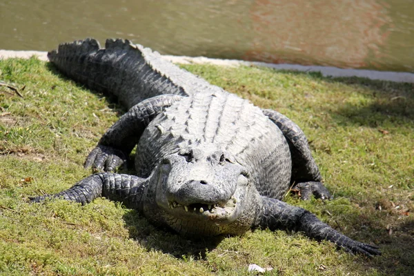
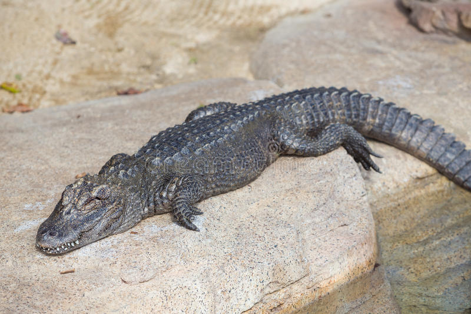

Alligators are one of the closest things to a dinosaur in modern day.
Alligator ancestors appeared more than 200 million years ago! The whole group of crocodilians came around the Cretaceous period.
While alligators are different from crocodiles they are both grouped under the crocodilian family. It's easy to mix up alligators and crocodiles, their difference is small but gators have an overbite and rounder snouts. With the overbite, when a gator has it's mouth closed you can't see their bottom teeth.
There's only two different types of gator species which are the American alligator and the chinese alligator. Although if there's only two species what excatly is different between them?
Well first off their habitat of course, being in two different parts of the world. Another difference is their sizes. Chinese alligators typically are smaller of the two only averaging at 2.1 meters or 6.9 feet. American alligators average in at 4 meters or 13.1 feet in length.
The American alligator
The Chinese alligator
To no surprise, these old reptiles are carnivores. They have 74 to 80 teeth that are continuously replaced as they wear and break off. They swallow their prey whole because they don't chew with all those teeth, just grab and tear. Both sepcies have slightly different diets, along with it depends on their ages and size. Alligator offsprings feed on insects, worms, spiders, and snails which not many people know. Once they become juviniles they start eating prey such as turtles, raccoons, larger fish, muskrats, and fledgling birds. Adult gators prey on large aquatic or land animals that venture close to the water's edge or enter the water. While they prefer smaller prey they will eat large prey when it comes too close. Chinese alligators are much smaller than their counterparts so they eat slightly different. They mostly feed on fish, small mammals, and birds. With no surprise, alligators are apex predators of their habitat.
No need for a chart for where alligators are located.
These reptiles are only native to the United States, Mexico, and China!
-The term “alligator” translates into a Spanish word that means “lizard”.
-Alligators live 35 to 50 years.
-They can swim up to 22mph in the water
-They can grow up to 9 inches back of their tails.
-They have a bite force of 2,980 psi.
- They are strictly freshwater reptiles.
- Alligators can weigh in over 1,000 pounds.
- When a alligator is hatched, their gender depends on the temperature.
- They can run up to 35 mph on land but they get tired quickly.